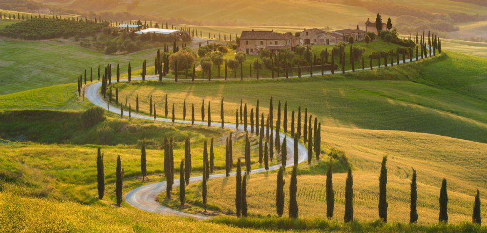

Die Toskana, früher Tuszien, Tuscien, Tuskien, italienisch Toscana, ist eine Region in Mittel-Italien. Sie grenzt im Norden an Ligurien und die Emilia-Romagna, im Osten an die Marken und an Umbrien und im Süden an Latium. Die Toskana gilt als historische Landschaft und bedeutende Kulturlandschaft. Ihre Bezeichnung leitet sich vom in der Antike hier ansässigen Volk der Etrusker her.
Quelle: Karte Toskana
Facts
Die Toskana ist bekannt für ihre hügelige Landschaft, die sich besonders durch die vielen Pinien, Säulenzypressen, Olivenbäume und Weinreben auszeichnet. Ihr höchster Berg ist der Monte Prado (2054 m). Die Toskana besitzt Waldgebiete von einer Million Hektar Fläche. In ihrem Süden finden Naturliebhaber ein großes Naturschutzgebiet, den Parco dell’Uccellina, mit außergewöhnlich seltener Flora und Fauna. Der Toskanische Archipel umfasst neben Elba, der drittgrößten Insel Italiens, unter anderen auch die kleineren Inseln Giglio, Capraia, Pianosa, Montecristo, Giannutri und Gorgona. Landschaft Zu den bekanntesten und beliebtesten Landschaften der Toskana zählen die Maremma im Süden, das Chianti-Gebiet zwischen Florenz und Siena sowie die Versilia-Küste im Nordwesten und die Etruskische Riviera, die sich von Livorno bis nach Piombino entlang der toskanischen Küste erstreckt. Im Norden wird die Toskana durch den Apennin, dessen Höhenzüge als Apuanische Alpen eine Höhe von knapp 2000 Metern und im Appennino Tosco-Emiliano von über 2000 Metern erreichen, begrenzt. Weitere Landschaften sind das Gebiet des Monte Amiata, der Mugello, das Chianatal (Val di Chiana), die Lunigiana und Garfagnana, das Elsatal (Val d’Elsa) und Val d’Orcia (Orcia-Tal), die Montagnola Senese und die Crete Senesi sowie die Colline Metallifere und das Casentino. Tourismus Zu den bekanntesten und beliebtesten Landschaften der Toskana zählen die Maremma im Süden, das Chianti-Gebiet zwischen Florenz und Siena sowie die Versilia-Küste im Nordwesten und die Etruskische Riviera, die sich von Livorno bis nach Piombino entlang der toskanischen Küste erstreckt. Im Norden wird die Toskana durch den Apennin, dessen Höhenzüge als Apuanische Alpen eine Höhe von knapp 2000 Metern und im Appennino Tosco-Emiliano von über 2000 Metern erreichen, begrenzt. Weitere Landschaften sind das Gebiet des Monte Amiata, der Mugello, das Chianatal (Val di Chiana), die Lunigiana und Garfagnana, das Elsatal (Val d’Elsa) und Val d’Orcia (Orcia-Tal), die Montagnola Senese und die Crete Senesi sowie die Colline Metallifere und das Casentino.
Zu den bekanntesten und beliebtesten Landschaften der Toskana zählen die Maremma im Süden, das Chianti-Gebiet zwischen Florenz und Siena sowie die Versilia-Küste im Nordwesten und die Etruskische Riviera, die sich von Livorno bis nach Piombino entlang der toskanischen Küste erstreckt. Im Norden wird die Toskana durch den Apennin, dessen Höhenzüge als Apuanische Alpen eine Höhe von knapp 2000 Metern und im Appennino Tosco-Emiliano von über 2000 Metern erreichen, begrenzt. Weitere Landschaften sind das Gebiet des Monte Amiata, der Mugello, das Chianatal (Val di Chiana), die Lunigiana und Garfagnana, das Elsatal (Val d’Elsa) und Val d’Orcia (Orcia-Tal), die Montagnola Senese und die Crete Senesi sowie die Colline Metallifere und das Casentino.
Der Tourismus ist für die Bewohner der Toskana eine der wichtigsten Einnahmequellen. Die Toskana besitzt eine große Anzahl an historisch und kunstgeschichtlich bedeutsamen Städten, meist etruskischen Ursprungs. Hauptziel der Touristen ist Florenz mit dem Dom, den Uffizien, dem Ponte Vecchio und den vielen Renaissancepalästen. Aber auch Pisa, mit dem berühmten Schiefen Turm, Siena, mit dem alljährlichen Pferderennen namens Palio, sowie San Gimignano, ein von mittelalterlicher Architektur geprägter Ort, der zum Weltkulturerbe der UNESCO zählt, sind beliebte Stationen auf einer Kulturreise durch die Toskana. Badetouristen finden gute Bedingungen an der Etruskischen Riviera und der Küste der Maremma entlang des Festlands sowie auf der Insel Elba, die über den Fährhafen Piombino erreicht werden kann. Die 328 km lange Küste der Toskana ist abwechslungsreich: Der nördliche Abschnitt, die Versilia, bietet lange, breite und vor allem feinsandige Strände. Der sich anschließende Teil, die etruskische Riviera, weist viele einsame Buchten auf, die zu Fuß oder mit dem Boot zu erreichen sind. Viel besuchte Seebäder sind Viareggio und Forte dei Marmi. Eine weitere Attraktion sind die vielen Thermalquellen der Toskana, besonders die Kurorte Montecatini Terme, Gambassi Terme, San Casciano dei Bagni, Bagno Vignoni, Rapolano Terme und Saturnia sowie das kleine Örtchen Bagni San Filippo. Die Toskana erlangte eine gewisse Berühmtheit als bevorzugtes Reiseziel einer Gruppe linksliberaler deutscher Intellektueller („Toskanafraktion“).
Liste der Sehenswürdigkeiten